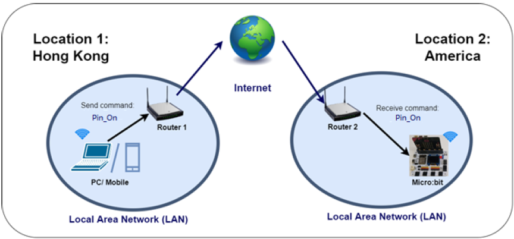
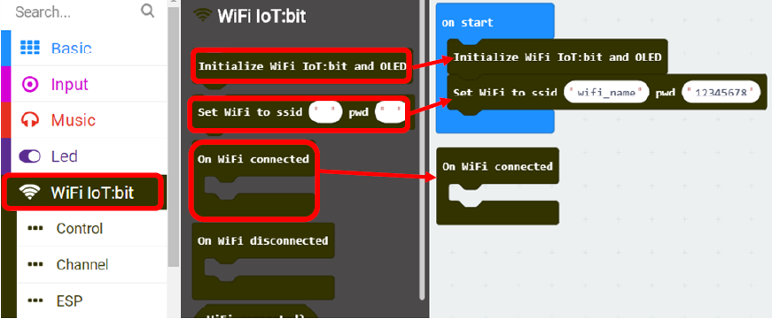
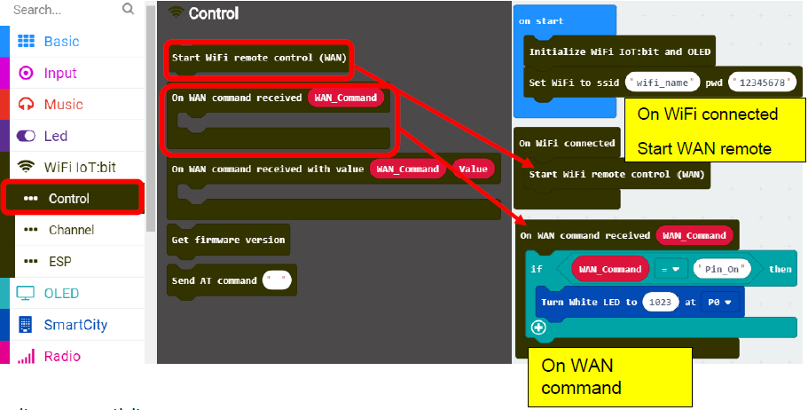
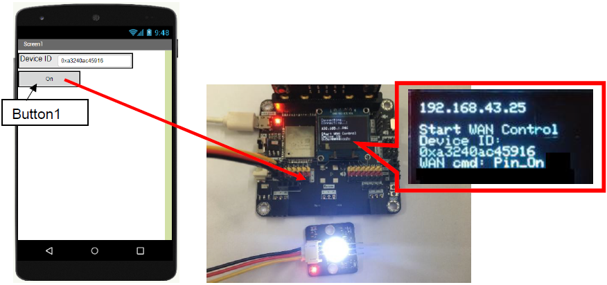
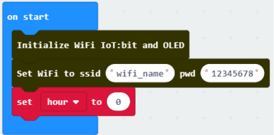
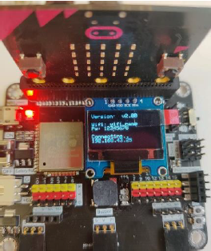
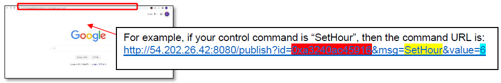
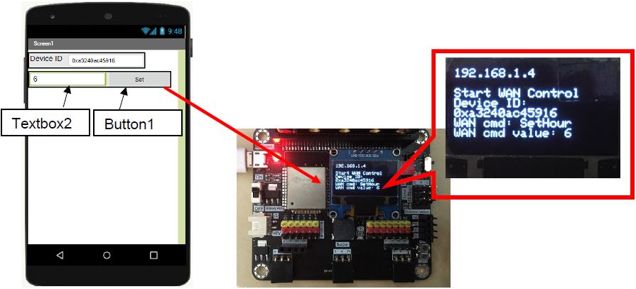
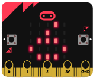

6. Chapter 4: Control your micro:bit by App inventor 2/Web¶
In this example, PC/mobile and micro:bit are connected to LAN network through WAN PC/mobile will send a control command “Pin_On” to micro:bit. When the micro:bit receive the command, it will turn on the module on the pin.  ***Before we control the micro:bit, please make sure your micro:bit is connected to the Wi-Fi.
6.1. What is API¶
API is HTTP URL, it is one of the way to communicate with other objects. http://54.202.26.42:8080/publish?id=DeviceID&msg=ControlCommand
6.2. Example 1: Control your micro:bit with modules¶
6.2.1. Know the API (control command without value)¶
http://54.202.26.42:8080/publish?id=DeviceID&msg=ControlCommand
6.2.2. Programming (MakeCode)¶
Step 1. Start WiFi remote control
Connect micro:bit to WiFi. 
Step 2. Set the Wi-Fi listening on Micro:bit WAN control command action
If Wan command “Pin_On” is received, white LED will be turned on. 
Step 3. Get micro:bit Device ID
Load the program to the micro:bit and connect the micro:bit to the WiFi IoT:bit.

Wi-Fi IoT:bit will start to connect to internet, when the connection is successful, the IP Address would be shown.

Then, it will start WAN remote control. If the connection is successful, the Device ID would be shown.
Remember the Device ID, it will be used for WAN connection on the next step.

6.2.3. Result (WEB)¶
Step 1. Get WAN control URL (command without value)
The WAN control command URL is: http://54.202.26.42:8080/publish?id=DeviceID&msg=ControlCommand
Open your web browser and input control command URL, then press “enter”

Step 2
After connected to WAN remote control is started, when Button1 is clicked, it will send WAN command “Pin_On” to the micro:bit with provided Device ID.
The LED on P0 will be turned on.

6.2.4. Result (App inventor 2)¶
Step 1. Get WAN control URL (command without value)
The WAN control command URL is: http://54.202.26.42:8080/publish?id=DeviceID&msg=ControlCommand
Step 2. Get controlled by mobile app in App Invetor
In below example, you can create a web connection, set the URL to the control command URL in App inventor.
A. Designer

B. Blocks
When the remote button is clicked, it direct to the command URL, and control the micro:bit by Wi-Fi (WAN connection).

Step 3
After connected to WAN remote control is started, when Button1 is clicked, it will send WAN command “Pin_On” to the micro:bit with provided Device ID.
The LED on P0 will be turned on. 
6.3. Example 2: Set the parameter via Wi-Fi (e.g. clock)¶
6.3.1. Know the API (control command without value)¶
http://54.202.26.42:8080/publish?id=DeviceID&msg=ControlCommand
6.3.2. Programming (Makecode)¶
Step 1. Set the Wi-Fi listening on micro:bit WAN control command action
Using variable is useful when you need to change a program setting in micro:bit; for example: clock
Also, you will need parameters “hour” for the clock.
The initial value for the clock (hour) is 0. 
Connect Wi-Fi remote control (WAN) after Wi-Fi connected.

After an hour, the parameter “hour” will be changed by 1.

The time (current hour) can be changed by a WAN command received:
Device ID: Your micro:bit Device ID (to identify micro:bit device to receive the command)
WAN_Command: SetHour (command for micro:bit)
Value: 6 (the value for the command)

Step 2. Get micro:bit Device ID
Load the program to the micro:bit and connect the micro:bit to the WiFi IoT:bit. 
Wi-Fi IoT:bit will start to connect to internet, when the connection is successful, the IP Address would be shown.

Then, it will start WAN remote control. If the connection is successful, the Device ID would be shown.
Remember the Device ID, it will be used for WAN connection on the next step.

6.3.3. Result (WEB)¶
Step 1. Send controlled by browser (command with value)
The control command URL is: http://54.202.26.42:8080/publish?id=DeviceID&msg=ControlCommand&value=value
Open your web browser and input control command URL, then press “enter” 
6.3.4. Result (App inventor 2)¶
In this example, you can create a web connection, set the URL to the control command URL (http://54.202.26.42:8080/publish?id=0xa3240ac45916&msg=SetHour&value=6)
A. Designer

B. Blocks
When the remote button is clicked, it direct to the command URL, and control the micro:bit by Wi-Fi (WAN connection).

After connected to WAN remote control is started, when Button1 is clicked, it will send WAN command “SetHour” with value “6’ to the micro:bit with provided Device ID. 
Once it receives the WAN command (SetHour) with value (6), the updated value will be shown. 